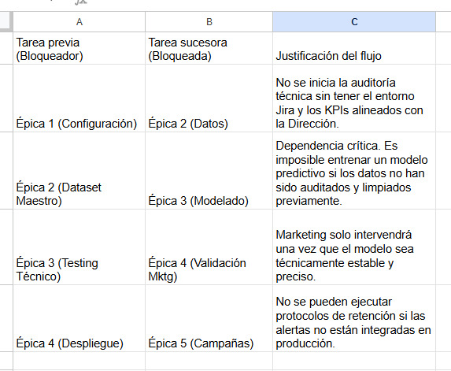
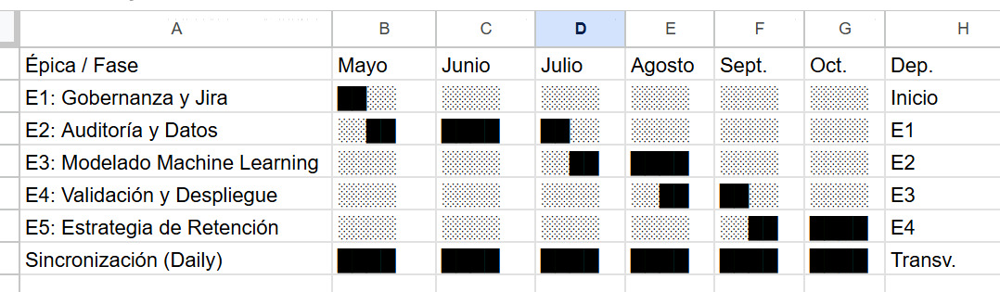
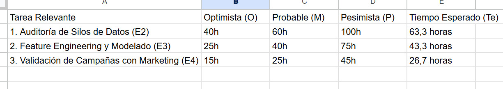
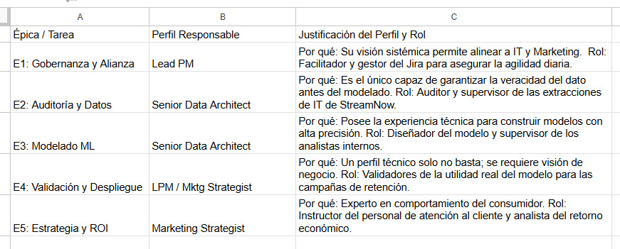
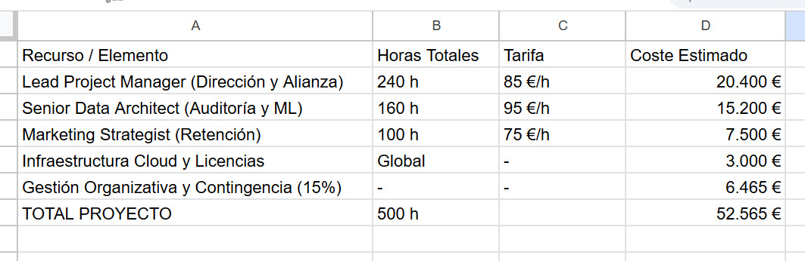
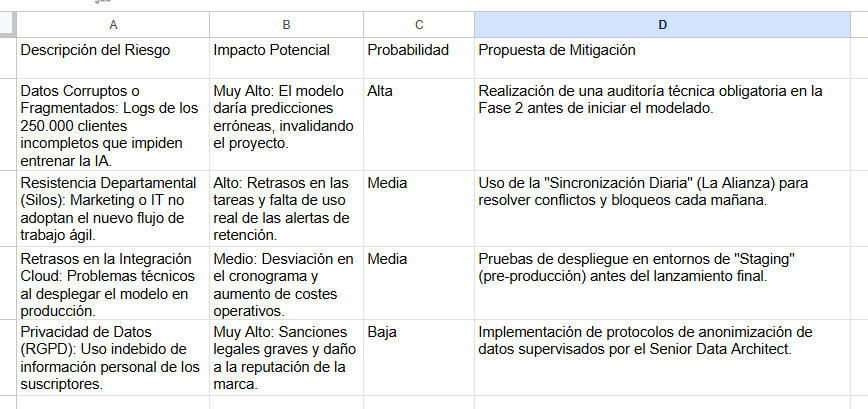

1 — Identificación y descomposición de tareas
Antonio López García — Lead Project Manager de Tech_assistant.
StreamNow se encuentra en una situación crítica, con una pérdida de clientes insostenible. No podemos permitir que la inercia interna siga igual. Necesitamos intervenir; el caso es salvar la empresa y en 6 meses dejaremos un flujo de trabajo fluido y ágil, rompiendo definitivamente las barreras entre IT, Datos y Marketing para que el uso de la inteligencia predictiva sea el motor de la rentabilidad.
Nuestros especialistas senior serán coordinadores del personal de StreamNow. Cada subtarea técnica será supervisada directamente por Tech_assistant para garantizar la calidad y el cumplimiento de los plazos.
1.1 — Épica 1: Proyecto y bases del proyecto definido en Jira
Historia 1.1: Configuración de Jira y bases. Implementación del flujo de trabajo fluido que heredará la empresa.
Historia 1.2: Sincronización Diaria (La Alianza). Sesiones de desayuno y resolución de bloqueos (1 hora diaria durante 6 meses para motivar y coordinar a los representantes de sección).
↑ Volver al índice1.2 — Épica 2: Auditoría e Integración de Datos
Fase crítica para unificar los silos de información dispersos de los 250.000 clientes.
Historia 2.1: Auditoría de extracción de logs, datos de clientes y pagos. Supervisión del trabajo de IT StreamNow para asegurar la veracidad del dato.
Historia 2.2: ETL (Extracción, Transformación y Carga). Asegurar que el equipo de Datos StreamNow genere una base sólida para el modelo.
Historia 2.3: Generación del Dataset maestro final.
↑ Volver al índice1.3 — Épica 3: Modelado Machine Learning
Desarrollo de modelo para identificar el riesgo de abandono.
Historia 3.1: Construcción del modelo de Machine Learning.
Historia 3.2: Entrenamiento del modelo de Machine Learning.
Historia 3.3: Testing y validación técnica del modelo.
↑ Volver al índice1.4 — Épica 4: Validación del modelo e Implantación
Historia 4.1: Validación del modelo con Marketing. Asegurar que las alertas sirven para campañas reales.
Historia 4.2: Despliegue en Producción. Garantizar un despliegue ágil sin interrupciones del servicio.
↑ Volver al índice1.5 — Épica 5: Estrategia de Retención
Fase de ejecución para recuperar la rentabilidad de StreamNow.
Historia 5.1: Operacionalización de Campaña: Diseño de protocolos de retención e instrucción al personal de Atención al Cliente.
Historia 5.2: Control Financiero y Seguimiento. Monitorización del objetivo de reducción de churn al 3%.
↑ Volver al índice2 — Secuenciación y dependencias
El proyecto se ejecutará siguiendo una secuencia lineal de fases críticas, con una tarea de gestión transversal que asegura la agilidad del flujo.
Secuencia lógica de ejecución:
1. Inicio: Épica 1 (Gobernanza y Jira).
2. Preparación: Épica 2 (Auditoría e Integración de Datos).
3. Desarrollo: Épica 3 (Modelado Machine Learning).
4. Transición: Épica 4 (Validación e Implantación).
5. Cierre y Operación: Épica 5 (Estrategia de Retención y ROI).
Dependencias críticas y justificación:
La transversalidad de la Alianza (1.2): A diferencia del resto, la sincronización diaria no espera a ninguna tarea; se ejecuta en paralelo durante los 6 meses para garantizar la eliminación de bloqueos en tiempo real.
Criterio de Calidad: Hemos decidido que la Épica 2 sea la fase más robusta. Si los datos iniciales son erróneos, todo el modelado posterior fallará, invalidando la inversión de StreamNow.
Aceptación de Negocio: La secuencia asegura que la tecnología nunca vaya por delante de la estrategia de negocio; Marketing valida antes de desplegar.

↑ Volver al índice3 — Planificación temporal (diagrama de Gantt)
El proyecto tiene una duración total de 24 semanas (6 meses), comenzando en mayo de 2026 y finalizando en octubre del mismo año.
Justificación del Tiempo:
1. E1 (2 semanas): Las dos primeras semanas de mayo se centran concretar la solución junto a la empresa y la configuración del entorno Jira.
2. E2 (8 semanas): Iniciamos la auditoría la tercera semana de mayo y ocupamos todo junio. Es el cimiento de los datos de los 250.000 clientes.
3. E3 (6 semanas): El modelado técnico comienza en la segunda quincena de julio y termina en agosto.
4. E4 (4 semanas): Un mes de transición (quincena de agosto y quincena de septiembre) para validar con Marketing y desplegar en la nube.
5. E5 (6 semanas): La fase final de ejecución de campañas empieza a mitad de septiembre y se intensifica en octubre para asegurar el objetivo del 3%.
6. Sincronización Transversal: Coordinar todo el proyecto.


↑ Volver al índice4 — Estimación de tiempos (PERT)

↑ Volver al índice5 — Identificación de recursos

↑ Volver al índice6 — Estimación de costes
Relación con recursos y duración:
Talento Senior: El 82% del presupuesto se destina a los especialistas de Tech_assistant que supervisarán al personal de StreamNow durante las 24 semanas.
Uso de Tecnología: Se asigna un coste fijo para el entorno de computación (AWS/Azure) y las licencias de Jira necesarias para romper los silos de información.
Gestión (La Alianza): El 15% de margen cubre el esfuerzo de coordinación diaria para asegurar que IT, Datos y Marketing trabajen al unísono.
Justificación del orden de magnitud:
Viabilidad Estratégica: StreamNow pierde actualmente 500.000 € anuales. Una inversión de ~52k € representa solo el 10,5% de las pérdidas de un solo año.
Retorno de Inversión: Si el proyecto tiene éxito y reduce el churn al 3%, la empresa recuperará la inversión en apenas unos meses al estabilizar su base de 250.000 clientes.
Criterio Profesional: Las tarifas y horas reflejan un estándar de consultoría senior. No estamos vendiendo horas de desarrollo básico, sino arquitectura y dirección estratégica para salvar la compañía.

↑ Volver al índice7 — Identificación y análisis de riesgos
Tech_assistant se enfoca en los riesgos que históricamente han bloqueado a StreamNow: la falta de comunicación y la mala calidad de los datos. Nuestra gestión es proactiva para asegurar que el flujo de trabajo no se detenga.
Estrategia de Gestión: Como Lead PM, estos riesgos se monitorizan semanalmente en el panel de Jira. Si un riesgo pasa a probabilidad "Alta", se activa un plan de contingencia inmediato para proteger la inversión de 52.565 € de la compañía.
↑ Volver al índice8 — Visión global
1. ¿Es realista la planificación? Sí, y lo es por su enfoque incremental y protegido.
Plazo de 6 meses: Es un tiempo suficiente para completar el ciclo de vida de un proyecto de ciencia de datos (desde la auditoría hasta el despliegue), pero lo suficientemente corto para mantener la presión necesaria sobre el objetivo del 3% de churn.
Metodología Ágil: Al integrar la "Alianza Objetivo 3%" con sesiones diarias, eliminamos los tiempos muertos de espera entre departamentos, asegurando que el cronograma de 24 semanas se cumpla sin las fricciones del pasado.
2. ¿Los recursos son suficientes? Sí, gracias al Modelo Híbrido.
Inyección de Talento Senior: Los 3 especialistas de Tech_assistant (500 horas totales) proporcionan la dirección técnica que la empresa no tiene actualmente.
Aprovechamiento del Personal Interno: No sustituimos al equipo de StreamNow; lo potenciamos. Al utilizar su músculo ejecutor bajo nuestra supervisión, garantizamos que el conocimiento del negocio permanezca en la empresa.
3. ¿Los riesgos están bien gestionados? Hemos pasado de una gestión reactiva a una proactiva y estratégica.
Mitigación de Silos: El riesgo de resistencia interna se gestiona mediante la transparencia total en Jira y la participación obligatoria en los desayunos de coordinación.
Seguridad Técnica: El enfoque PERT nos ha permitido blindar las fases de mayor incertidumbre (Auditoría e Ingeniería de Variables), asegurando que el presupuesto de 52.565 € sea robusto frente a imprevistos técnicos.
Síntesis Final de Tech_assistant: El plan propuesto es coherente, viable y altamente rentable. Al finalizar estos 6 meses, StreamNow no solo habrá recuperado su margen de beneficio al estabilizar su base de 250.000 clientes, sino que heredará una cultura de trabajo ágil y fluida. Hemos diseñado una solución que soluciona el presente pero, sobre todo, asegura el futuro técnico y arquitectónico de la compañía.
↑ Volver al índice